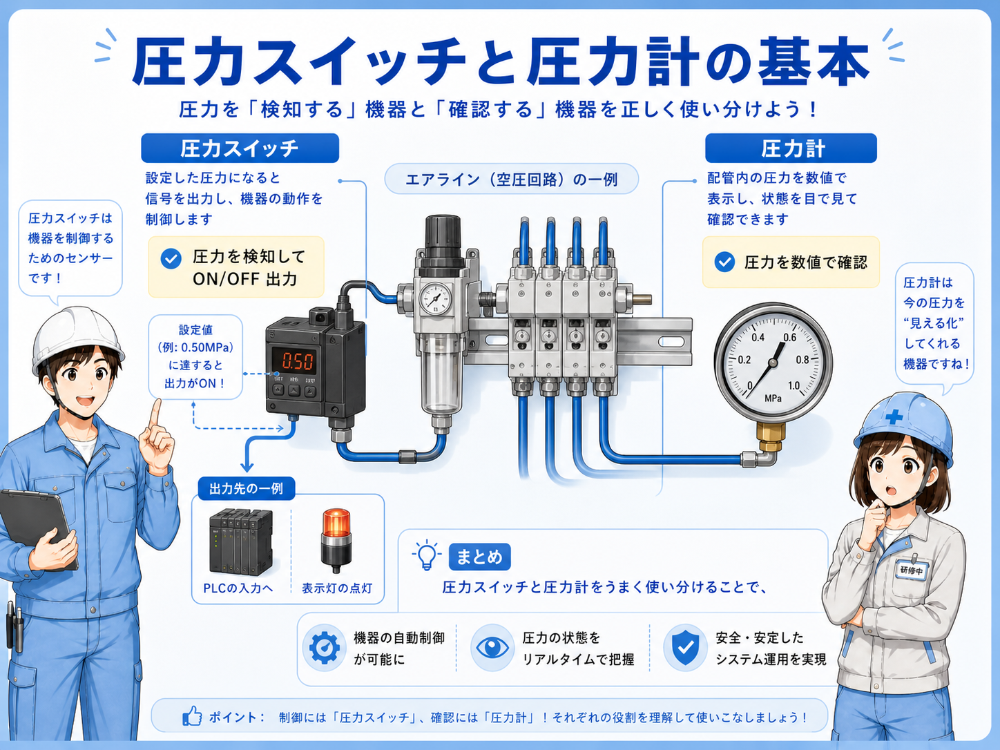
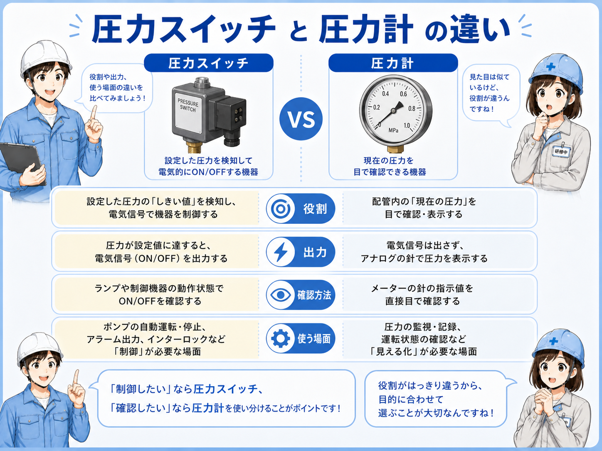
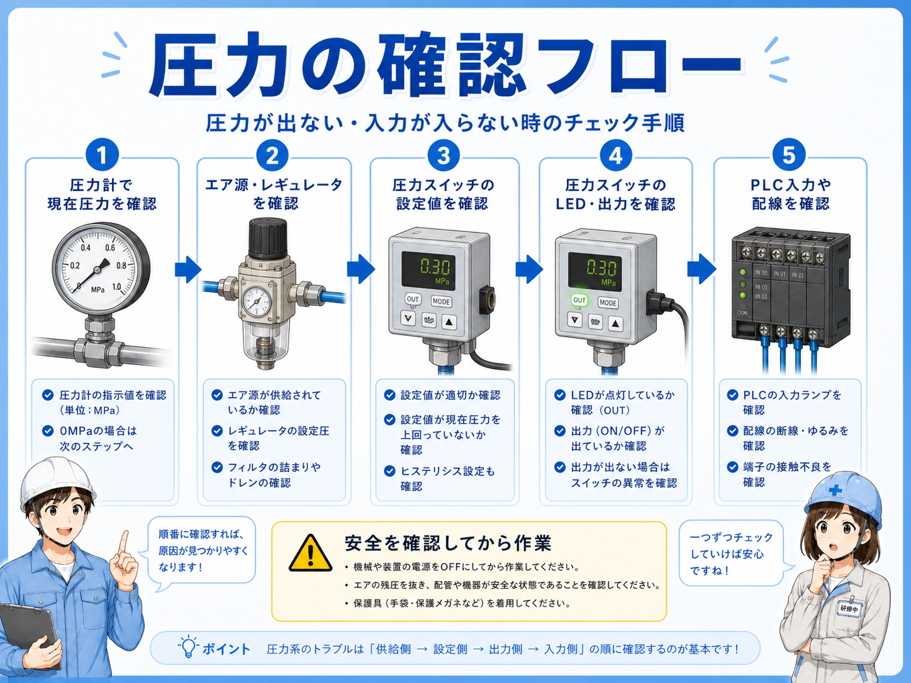

圧力スイッチと圧力計の違い
圧力計とは、空気や水、油などの圧力を目で確認するための計器です。 空圧設備では、圧縮空気がどれくらいの圧力で供給されているかを見るためによく使われます。
圧力レギュレータの近くに付いている圧力計は、調整後の二次側圧力を見るために使われることが多いです。 装置入口、FRLユニット、分岐回路、エアブロー回路、真空回路など、取り付けられる場所によって読み取る意味が変わります。
圧力スイッチは設定圧に対してON/OFF信号を出す部品で、PLC入力や警報に使われることがあります。圧力計は人が圧力を目で読むための部品です。 この記事では、ON/OFF信号ではなく、針や表示値をどう読むかに絞って整理します。
まずはこう覚える
圧力計は現在圧力を目視確認する部品で、PLCへ直接信号を送る用途には使いません。数字を見る前に「どこの圧力を見ているか」を確認するのが基本です。

先輩圧力計は、針の数字だけを見ても判断しにくいよ。レギュレータの前なのか後なのか、装置入口なのか分岐先なのかで意味が変わるからね。

後輩まず取付位置を見てから、針の値を読むんですね。
圧力計は目視確認する部品

空圧設備では、エア源から来た空気がフィルタやレギュレータを通り、エアバルブやエアシリンダへ送られます。 圧力計は、その途中の圧力を目で確認するために取り付けられます。
アナログ圧力計は、針と目盛りで圧力を表示します。 デジタル圧力計は数値で表示しますが、現場ではどちらも「取付位置」と「単位」を確認してから読みます。
空圧ではMPa表示を見ることが多いですが、kPa、bar、kgf/cm²など、別の単位が併記されている圧力計もあります。 複数の目盛りがある場合は、どの単位を読んでいるかを間違えないようにします。
単位を見間違えない
圧力計には複数の単位が表示されていることがあります。MPa、kPa、barなど、どの目盛りを読んでいるかを確認しましょう。
圧力スイッチは信号にする部品
圧力計を見るときは、針の位置だけでなく、目盛りの範囲、単位、ゼロ点、針のふらつきも確認します。 たとえば、同じ0.5でもMPaなのかbarなのかで意味が変わります。
また、停止中の圧力と動作中の圧力は分けて見ます。 停止中は正常に見えても、シリンダやエアブローが動いた瞬間に大きく下がる場合があります。
| 見るポイント | 確認すること | 現場での見方 |
|---|---|---|
| 取付位置 | 元圧、二次圧、分岐先、真空側など | どこの圧力を表示しているか、配管と図面で確認する |
| 単位 | MPa、kPa、bar、kgf/cm²など | 読んでいる目盛りの単位を見間違えない |
| 針の状態 | ゼロ点、ふらつき、戻り、引っかかり | 針が不自然に止まる、戻らない、振れる場合は注意する |
| 動作中の変化 | 設備動作時に圧力が大きく落ちないか | 停止中だけでなく、実際に動かした時の下がり方を見る |
停止中だけで判断しない
空圧設備では、動作した瞬間に圧力が下がることがあります。停止中の値だけでなく、シリンダやブローが動いた時の針の動きも確認します。
取付位置と見ている圧力の違い

正常な状態では、圧力計の針が設備の指定圧や普段の値に近いところで安定しています。 動作中に少し下がることはありますが、大きく落ち込んだり、激しくふらついたりしない状態です。
異常が疑われる状態には、圧力が低い、針が大きくふらつく、針がゼロに戻らない、針が動かないなどがあります。 その場合、圧力不足だけでなく、圧力計自体の故障や詰まりも考えます。
| 状態 | 起きやすいこと | 確認する場所 |
|---|---|---|
| 指定圧付近で安定 | 設備動作が安定しやすい | 通常値、指定圧、動作中の変化を見る |
| 低すぎる | 力不足、動作遅れ、吸着不足の原因になることがある | 元圧、レギュレータ、フィルタ詰まり、エア漏れを確認する |
| 針がふらつく | 圧力変動、脈動、供給不足が疑われる | 同時動作、エア消費、配管径、レギュレータ位置を見る |
| 針が戻らない・動かない | 計器故障、詰まり、ゼロ点ずれの可能性がある | 別の圧力計、元圧、配管詰まり、取付部を確認する |
圧力計だけで断定しない
圧力計の表示が怪しい時は、圧力そのものの異常だけでなく、圧力計の故障や取付部の詰まりも考えます。別の計器や周辺状態と合わせて確認します。
設定値と現在圧力の見方

圧力計を見るときは、まずどこの圧力を見ている計器かを確認します。 レギュレータの二次側なのか、装置入口の元圧なのか、分岐先なのか、真空回路なのかで意味が変わります。
次に、単位と目盛りを確認し、設備の指定圧や通常値と比べます。 そのうえで、停止中だけでなく動作中の針の動きも見ます。
1. 位置を見る
元圧、二次圧、分岐圧、真空側など、どこの圧力か確認します。
2. 単位を見る
MPa、kPa、barなど、見ている目盛りを確認します。
3. 指定圧と比べる
装置の指定圧や通常時の値と比較します。
4. 動作中を見る
設備が動いた時に針が大きく下がらないか確認します。
先輩圧力計は、停止中の数字だけ見て安心しない方がいいよ。シリンダやブローが動いた時に針が大きく下がるなら、供給不足や漏れを疑うこともあるね。
後輩止まっている時の値と、動いた時の下がり方を両方見るんですね。
トラブル時の確認順
現場で圧力計を見るときは、まず取付位置を確認します。 同じ装置でも、入口側、レギュレータ後、分岐後、真空側などで表示される値の意味が変わります。
次に、針の位置と単位を確認します。 複数の目盛りがある圧力計では、見ている単位を間違えると判断を誤りやすくなります。
また、圧力が低い時はすぐにレギュレータを上げるのではなく、元圧不足、フィルタ詰まり、ドレン、エア漏れ、チューブ折れ、供給バルブの状態も確認します。 圧力計は、その切り分けの入口として使います。
トラブル時は、エア源 → レギュレータ → 配管 → 圧力計 → 圧力スイッチ信号の順で確認します。 圧力スイッチがOFFでも圧力が完全にゼロとは限らず、設定値未満なだけの場合があります。 逆に圧力計が正常値でも、圧力スイッチの設定ミスや配線不良でPLCに信号が入らないことがあります。
ここを覚える
圧力計は、圧力を目視確認するための計器です。位置・単位・指定圧・ゼロ点・動作中の変化をセットで確認すると、読み間違いを減らせます。
取付位置
どこの圧力を表示している圧力計か確認します。
単位と目盛り
MPa、kPa、barなど、読み取る目盛りを確認します。
針の状態
ゼロ点、ふらつき、戻り、引っかかりを確認します。
動作中の変化
停止中だけでなく、設備が動いた時の下がり方を見ます。
現場で注意したいポイント
圧力計は現在圧力を目視確認する部品で、PLCへ直接信号を送る用途には使いません。 レギュレータの設定圧、装置入口の元圧、分岐回路の圧力などを確認するために使います。
現場で見るときは、どこの圧力を見ているか、単位は何か、指定圧と比べてどうか、針がふらついていないか、動作中に大きく下がらないかを確認します。 圧力が低い時は、レギュレータだけでなく、元圧、漏れ、フィルタ詰まりも合わせて見ます。
この記事の結論
圧力計は現在圧力を確認し、圧力スイッチは設定圧で信号を出すという役割を分けて使うのが基本です。設定変更は勝手に行わず、図面・仕様・設備条件を確認したうえで実施しましょう。